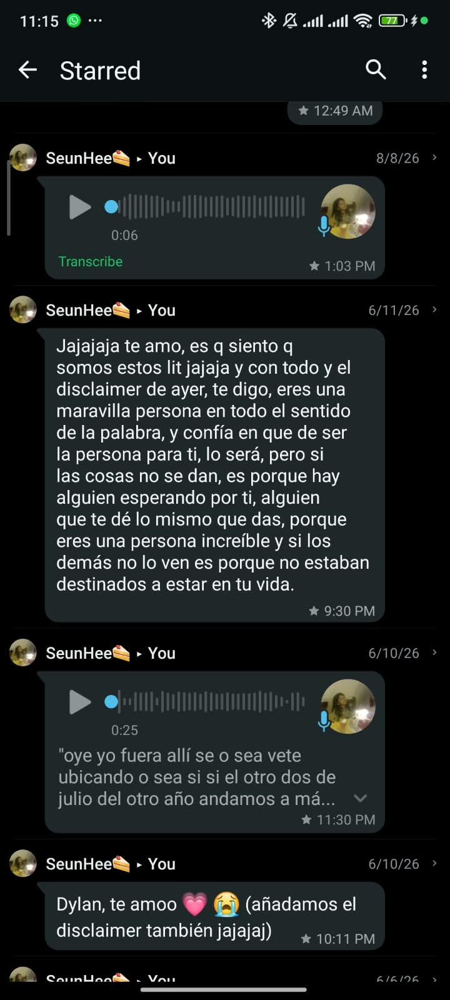

Día 11: El rescate
Hola Mabe. Mira, hoy es 11 y quiero hablar de las veces en las cuales tú me has salvado. A pesar de nuestra relativamente corta amistad, tú has estado ahí para mí incontables veces.
Genuinamente creo que el día en donde sentía que se me derrumbaba el mundo fue esa noche del 11 de junio. De cierta manera me sentí acompañado y comprendido en lo que llevaba rondando dentro de mi cabeza y no me sentí juzgado de ninguna manera. Más bien me sentí muy acompañado y muy querido.
Cada palabra que me has dedicado, así como cada buen deseo que has puesto sobre mí, lo agradezco muchísimo. Yo agradezco todos los días haberte conocido y te juro que en mis destacados tengo muchísimos de tus mensajes, porque es bonito guardar los lindos gestos que has tenido conmigo.

Espero yo poder ser un apoyo así de grande como tú lo has sido conmigo. Sé que muchas veces me has salvado de una manera que no te lo puedes imaginar. Estaré toda mi vida en deuda contigo Mabel Valentinaaaaaa.
Sé que mi amistad contigo es invaluable, porque en el corto tiempo que hemos compartido hemos vivido muchísimas cosas, hemos superado un par de problemas y hemos continuado adelante. Me alegro muchísimo de poder seguir compartiendo contigo, porque sé que así como yo estaré para ti, tú estarás en mis malos días así como en los días buenos.
Que sepas que mientras yo exista siempre tendrás un fan. Si un día sacas un lightstick yo lo compraría JAJAJA.
Ten un lindo día 11 y ya entramos en la cuenta final para tu pumpeaños JAJA 💜